علی اسماعیلپور
طراحی راهکارهای هوشمند با ترکیب فناوری، داده و تجربه یادگیری
از سال ۱۳۷۸ مسیر حرفهای من با نرمافزار، پایگاه داده و محتوای دیجیتال آغاز شد؛ مسیری که از مدیریت پروژههای دیجیتالسازی و مکانیزاسیون اسناد سازمانی عبور کرد و امروز به تحلیل داده، هوش مصنوعی، طراحی محصول، سواد مالی و پژوهش در کسبوکارهای هوشمند رسیده است. تمرکز من بر تبدیل فناوری و دانش به راهکارهایی است که تصمیمگیری، فرایند و یادگیری را بهتر میکنند.

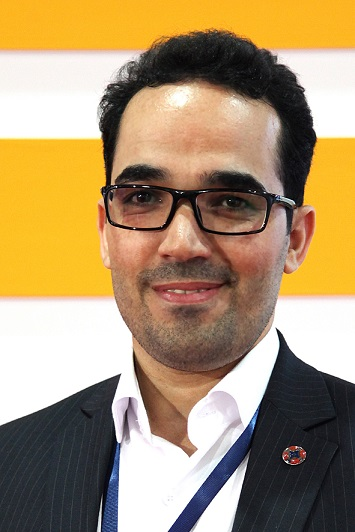
درباره علی اسماعیلپور
مدیر تحول دیجیتال با تمرکز بر داده و هوش تجاری
من علی اسماعیلپور هستم؛ مسیر حرفهایام از سال ۱۳۷۸ با نرمافزار، بانکهای اطلاعاتی و محصولات دیجیتال آغاز شد و در ادامه با مدیریت پروژههای دیجیتالسازی و مکانیزاسیون اسناد سازمانی، مدیریت فناوری، تحلیل داده، هوش مصنوعی، سواد مالی، تولید دانش و طراحی تجربههای یادگیری گسترش یافت.
در کنار پروژههای فناوری، بهعنوان مدیرمسئول مؤسسه رایافرهنگ در زنجیره تولید و انتشار محتوای علمی و آموزشی فعالیت داشتهام؛ از تألیف، ترجمه و ویرایش تا طراحی، صفحهآرایی و مدیریت تولید آثار منتشرشده.
هماکنون دانشجوی دکتری مدیریت فناوری اطلاعات با گرایش کسبوکارهای هوشمند هستم. تحصیلاتم شامل کارشناسی مهندسی نرمافزار، MBA بازار سرمایه و کارشناسی ارشد مدیریت اجرایی (استراتژیک) است.
تمرکز من ایجاد پیوند میان فناوری، داده و دانش برای طراحی راهکارهایی است که به تصمیمگیری بهتر، یادگیری مؤثرتر و خلق ارزش پایدار کمک میکنند.
DNA حرفهای من
سه مسیر اصلی هویت حرفهای من در این سالها، در نقطه تلاقی فناوری، انسان و نوآوری شکل گرفتهاند. بهجای درصد مهارت، ترجیح میدهم این هویت را با مسیر، خروجی و تجربه نشان دهم.
فناوری و داده
از توسعه نرمافزار، پایگاه داده و دیجیتالسازی فرایندهای سازمانی تا تحلیل داده، هوش مصنوعی، BI و تصمیمگیری دادهمحور؛ این ستون ریشه تاریخی مسیر من در جهان دیجیتال است.
یادگیری و سواد مالی
تبدیل دانش به تجربه؛ از تألیف و ترجمه کتاب تا طراحی بازی، کلاس، محتوای آموزشی و برند FI360 برای آموزش مالی کودکان، نوجوانان و خانوادهها.
نوآوری و محصول
من اغلب پروژهها را فقط اجرا نمیکنم؛ آنها را بهعنوان یک مسیر طراحی میکنم: از ایده و مدل مفهومی تا محصول، MVP، تیم، و فرصتهای جدید برای توسعه کسبوکار.
مسیر حرفهای من
مزیت من فقط سابقه زیاد نیست؛ عبور از چند موج فناوری و حفظ پیوند میان فناوری، آموزش، محتوا، مدیریت و نوآوری است. این خط زمان، فشردهترین روایت از مسیر من از سال ۱۳۷۸ تا امروز است.
آغاز مسیر دیجیتال
شروع فعالیت حرفهای با کتابهای الکترونیکی، محتوای دیجیتال و تجربههای اولیه وب و نرمافزار؛ دورهای که بنیان نگاه من به فناوری و محتوا را ساخت.
دیجیتالسازی و مکانیزاسیون اسناد سازمانی
مدیریت پروژههای سازمانی با تیمهای ۱۵ تا ۲۰ نفره؛ از تحلیل و قرارداد تا طراحی فرایند، نرمافزار اختصاصی «اسکن استودیو»، اسکن گروهی، پالایش نیمهخودکار اسناد و کنترل کیفیت. تمرکز اصلی بر سرعت، دقت، قابلیت ردیابی و محرمانگی اطلاعات بود.
مطالعه موردی کامل ←رسانههای دیجیتال و محصولات چندرسانهای
تولید نرمافزارهای آموزشی و فرهنگی مانند «کولهپشتی» و «قصههای ماندگار»، حضور در جشنوارههای رسانههای دیجیتال و تجربه جدیتر در ساخت محصول.
داده، بازار و تحلیل
ورود جدیتر به تحلیل داده، بازار سرمایه، سامانههای اطلاعاتی و مدلهای تصمیم؛ جایی که مسیر فناوری با تحلیل و داده بهطور عمیقتر گره خورد.
تولد FI360
تبدیل سواد مالی از یک موضوع آموزشی به یک زیستبوم محصولی؛ کتاب، بازی، تجربه یادگیری و آموزش مالی برای کودکان، نوجوانان و خانوادهها.
هوش مصنوعی، کسبوکار هوشمند و آیندهپژوهی
تمرکز فعلی بر استفاده از داده و فناوریهای هوشمند برای تصمیمگیری بهتر، طراحی محصولات جدید، و پژوهشهایی مانند دوقلوی دیجیتال انسان و سیستمهای تصمیمیار.
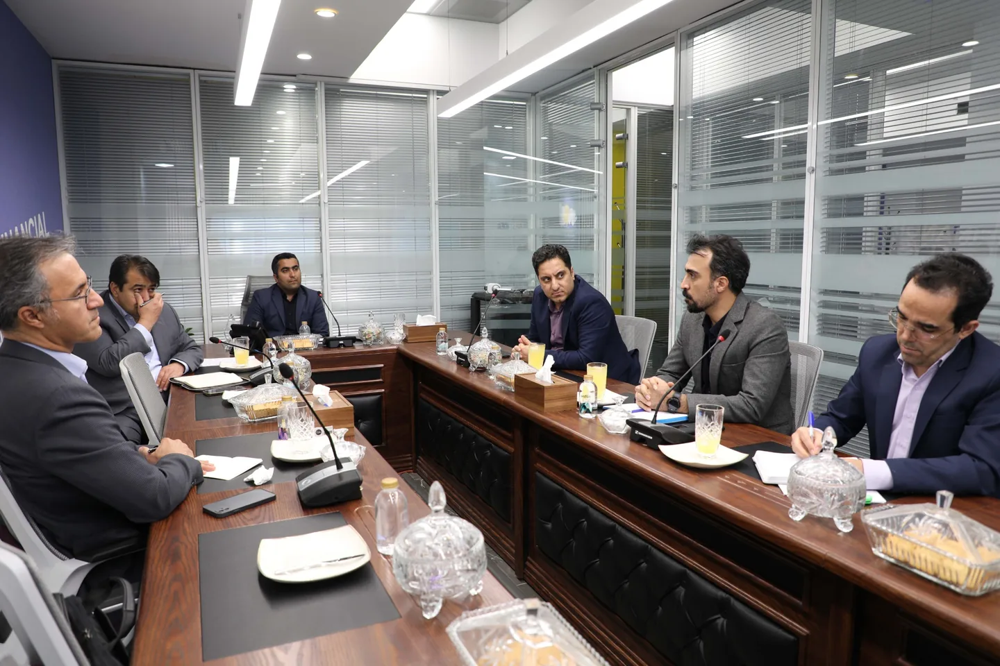
دیجیتالسازی و مکانیزاسیون اسناد سازمانی
مدیریت پروژههای تبدیل انبوه پروندههای کاغذی به آرشیو دیجیتال، با تیمهای ۱۵ تا ۲۰ نفره و ترکیبی از نرمافزار اختصاصی، طراحی فرایند و نوآوریهای عملیاتی برای افزایش سرعت، دقت و محرمانگی اطلاعات.
بیش از دو دهه تجربه در تولید و انتشار دانش
نشر برای من یک فعالیت جانبی نبوده است؛ بخشی از مسیر حرفهایام در تبدیل محتوا به محصول دانشی شکل گرفته. در بیش از ۱۵۰ عنوان ثبتشده، در نقشهایی از تألیف، ترجمه و ویراستاری تا طراحی، صفحهآرایی، کارشناسی تولید و مدیریت فرایند انتشار فعالیت داشتهام.
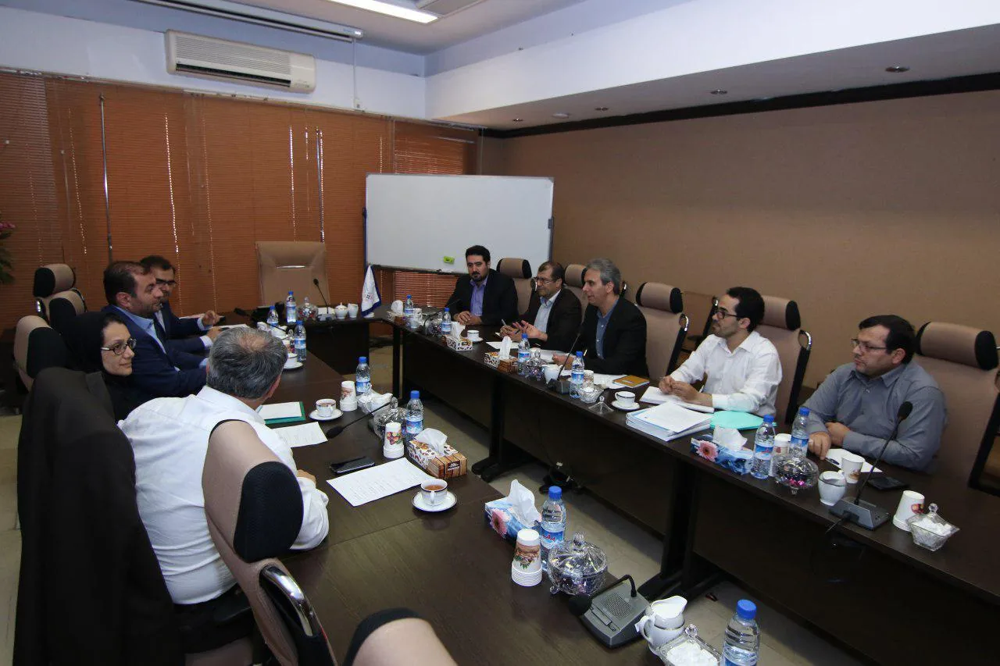
حوزههای همکاری
تمرکز من بر پروژههایی است که در آنها فناوری، داده، محصول و یادگیری باید کنار هم قرار بگیرند؛ نه صرفاً اجرای یک ابزار یا تولید یک خروجی منفرد.
راهکارهای هوشمند و داده
تحلیل مسئله، دیجیتالسازی فرایند، معماری داده و طراحی راهکارهای مبتنی بر هوش مصنوعی و تحلیل اطلاعات برای پشتیبانی از تصمیمگیری و بهبود عملیات سازمانی.
مدیریت و طراحی محصول
از کشف مسئله و طراحی مدل مفهومی تا برنامهریزی، هدایت تیم و توسعه محصول دیجیتال؛ با تمرکز بر قابلیت اجرا، کنترل ریسک و خلق ارزش واقعی.
تجربه یادگیری و تولید دانش
طراحی کتاب، بازی، محتوای آموزشی و تجربههای یادگیری؛ از ساختاردهی دانش و روایت تا مدیریت تولید و انتشار محصول آموزشی.
مسئلهای در مرز فناوری، داده، محصول یا یادگیری دارید؟
اگر مسئلهای دارید که به ترکیب تجربه اجرایی، فناوری و نگاه محصولی نیاز دارد، خوشحال میشوم درباره آن گفتگو کنیم.
پروژههای فناورانه؛ از ایده تا پیادهسازی
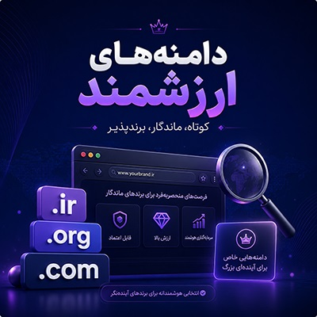
فروش دامنههای اینترنتی
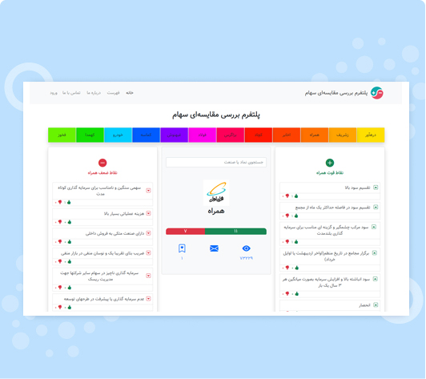
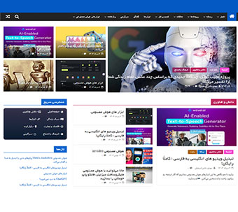
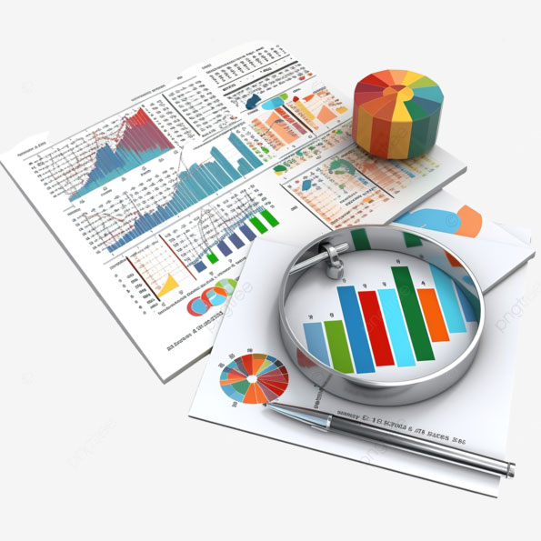
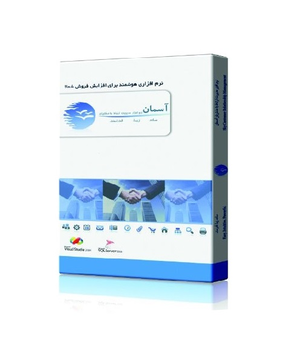
نرم افزار ارتباط با مشتریان آسمان
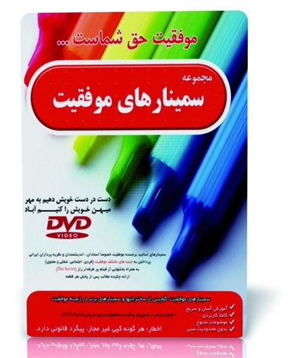
سمینارهای موفقیت 1 و 2
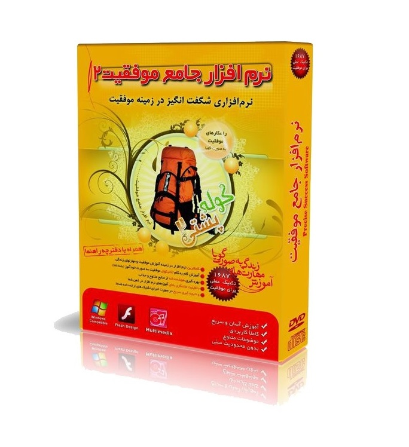
نرم افزار جامع موفقیت - کوله پشتی
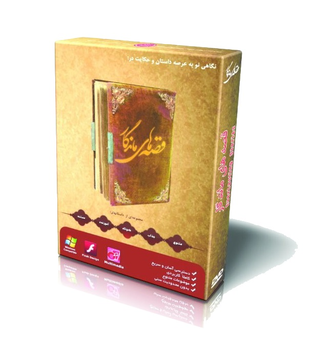
نرم افزار قصه های ماندگار
آزمایشگاه ایدهها
محلی برای تبدیل ایدههای میانرشتهای به مدل، محصول و راهکارهای نوآورانه.
فی ۳۶۰ | تجربههای یادگیری سواد مالی
مجموعهای از کتاب، بازی، داستان، ویدئو و آموزشهای تعاملی برای تبدیل مفاهیم مالی به مهارتهای کاربردی زندگی.
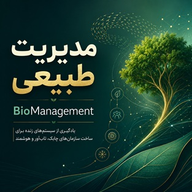
مدیریت طبیعی | BioManagement
نگاهی دوباره به مدیریت از زاویه سیستمهای زنده برای ساخت سازمانهای چابک، تابآور و هوشمند.
کتاب آهسته و پیوسته بخرید
راهنمای کاربردی سواد مالی شخصی، سرمایهگذاری بلندمدت و تصمیمگیری مالی هوشمند.
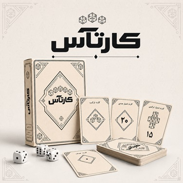
کارتآس | بازی رومیزی کارت و تاس
بازی رومیزی تجربهمحور با ترکیب کارت، تاس، ریسک و تصمیمگیری.
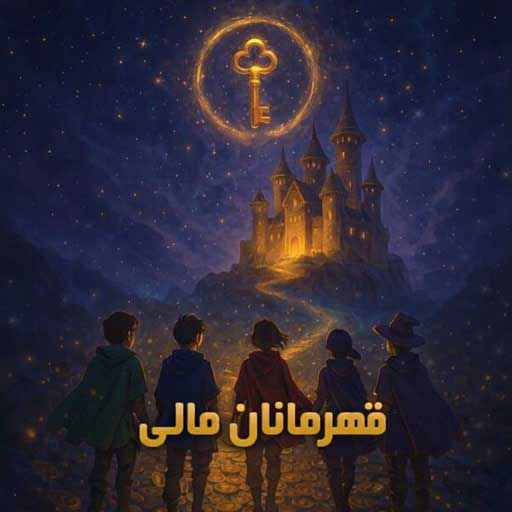
قهرمانان مالی | FiQ Heroes
بازی آموزشی برای تقویت سواد مالی، انتخاب آگاهانه و مسئولیتپذیری اقتصادی.
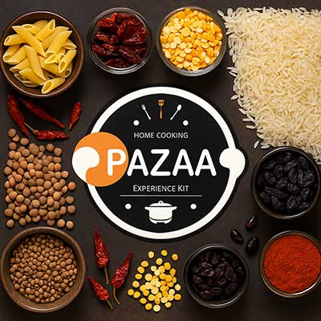
پزا | بستههای غذایی خشک
مدل نوآوری اجتماعی برای تبدیل مشارکت افراد و سازمانها به امنیت غذایی واقعی.
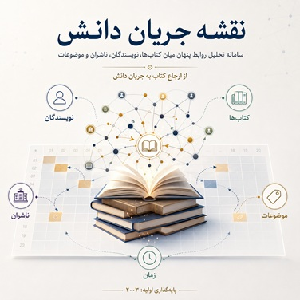
نقشه دانشی کتاب | Knowledge Flow
سامانه تحلیل روابط پنهان میان کتابها، نویسندگان، ناشران و مسیر انتقال ایدهها.
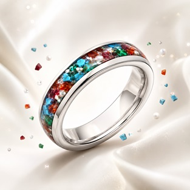
انگشتر چند گوهر
یک محصول مفهومی شخصیسازیشده با تمرکز بر معنا، روایت و طراحی.
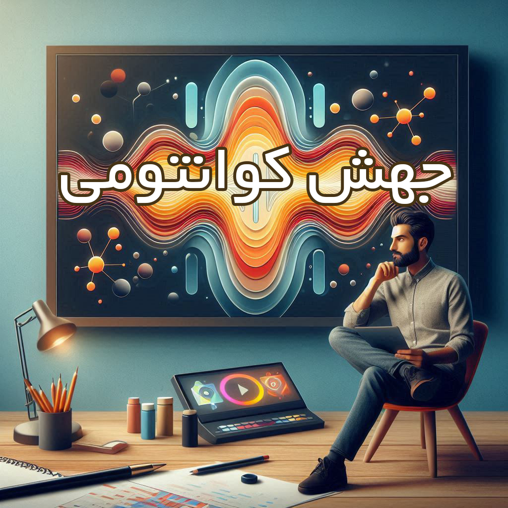
مجموعه ویدئویی جهش کوانتومی
میکرولرنینگ سازمانی برای افزایش کارایی و بهرهوری در گروه صنعتی انتخاب.
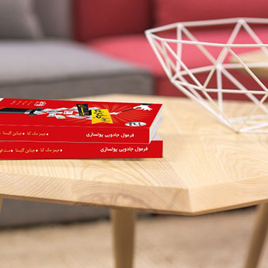
کتابهای کودک و نوجوان
ترجمه و تألیف کتاب در حوزه آموزش سواد مالی و ریاضیات ذهنی.
مقالات
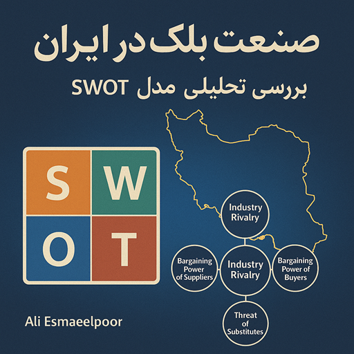
بررسی صنعت بانک در ایران - 1393
گروه مباحثاتی چندرسانهای - 1382
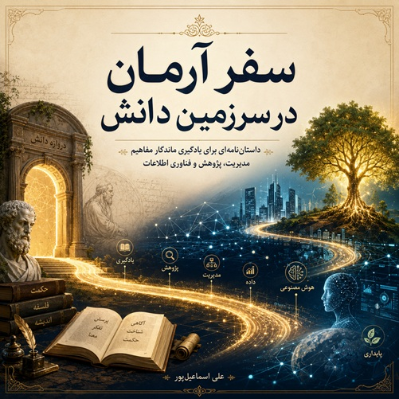
سفر آرمان در سرزمین دانش - 1405
گواهینامهها و افتخارات
دنبال علی اسماعیلپور دیگری هستید؟
برای جلوگیری از اشتباه در شناسایی و تفکیک هویت حرفهای افراد همنام، صفحهای جداگانه ساختهام تا هر «علی اسماعیلپور» با سابقه مستقل خودش معرفی شود.
برای یک گفتوگوی حرفهای در ارتباط باشیم
اگر درباره یک پروژه فناوری، داده، محصول آموزشی یا همکاری پژوهشی صحبت دارید، مستقیم پیام بدهید. ترجیح میدهم گفتگو از یک مسئله واقعی شروع شود.